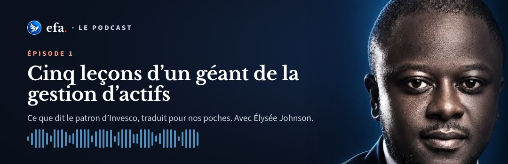

Le podcast EFA · Saison 1

DisponibleCinq leçons d’un géant de la gestion d’actifs
Tous les épisodes
Le principe
L’argent, raconté en quelques minutes.
Chaque épisode part d’une idée, d’un livre ou d’une parole de dirigeant, et la ramène à notre quotidien, en francs CFA.
- 1
Court. Dès 5 minutes, le temps d’un trajet.
- 2
Concret. Une ou plusieurs règles à appliquer le soir même.
- 3
Gratuit. À écouter ici, sans inscription.
La voix
Élysée Johnson
Fondateur d’Éducation Financière Afrique. Conseil en stratégie, banque d’investissement et capital-investissement, à Paris, New York et Abidjan.
Soyez prévenu à la sortie de chaque épisode.
Rejoignez EFA Community sur WhatsApp : le lien de chaque nouvel épisode y est partagé en premier.
Éducation financière, pas conseil en placement. Les entreprises citées le sont à titre d’exemple : EFA ne recommande aucun produit ni établissement.